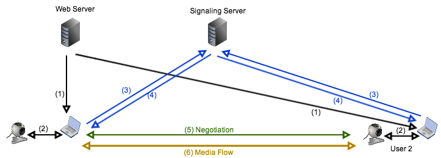
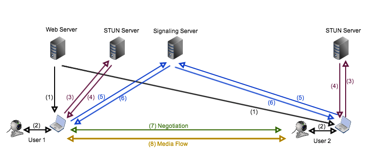
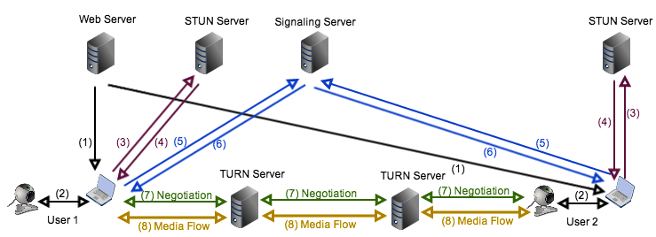

rtc.io: A node.js toolbox for WebRTC
Silvia Pfeiffer, NICTA
WebRTC
Real-Time Communication
-
P2P Video / Audio / Data
browser-to-browser ; open source code stack
-
Plugin-free in browser
Native JavaScript API
-
Higher quality of service
Low latency, modern codecs, encryption, firewalls
WebRTC Overview
- Web Server = Apache on localhost
- Signaling Server = rtc.io/switchboard/
NICTA project: http://rtc.io
Main author: Damon Oehlman
- Meet Artsio
- Artsio simplifies coding on client
- Artsio provides node.js modules
- including a signaling server
1. Fully declarative
video connection
My simplest HTML page
<meta name="rtc-signalhost" content="http://rtc.io/switchboard/">
<video id="local" rtc-capture="camera" muted></video>
<video rtc-peer rtc-stream="local"></video>
<script src="glue.js"></script>Download glue.js from rtc-glue: https://raw.github.com/rtc-io/rtc-glue/master/dist/glue.js
No JavaScript coding - fully declarative!
Check out chrome://webrtc-internals
Demo app for rtc-glue
https://github.com/rtc-io/rtcio-demo-peerconnection
- uses node.js with express as Web server
- uses rtc-glue client-side
- uses rtc-switchboard as Signaling server

2. Running a
Signalling Server
rtc-switchboard is my
node.js signalling server
var server = require('http').createServer();
var switchboard = require('rtc-switchboard')(server);
var port = 50000;
// start the server
server.listen(port, function(err) {
if (err) {
return console.log('Error starting server: ', err);
}
console.log('server running on port: ' + port);
});Uses http://primus.io as websocket server (abstraction layer from real-time node frameworks such as socket.io or engine.io).
Demo application for
rtc-switchboard
https://github.com/rtc-io/rtcio-demo-signaller
- uses node.js with express as Web server
- uses rtc-signaller for client side signalling
- uses rtc-switchboard for server side signalling
3. Node.js based
Peer Connection
More control
client-side (JS only)
- rtc-media for camera/mike access
- rtc-quickconnect for peer connection
- built for node.js
rtc-media and rtc-quickconnect demo
var quickconnect = require('rtc-quickconnect');
var media = require('rtc-media');
var local = createElement('div', { class: 'local' });
var remote = createElement('div', { class: 'remote' });
var localMedia = media();
localMedia.render(local);
function handleConnect(conn, id, data, monitor) {
conn.addStream(localMedia.stream);
conn.addEventListener('addstream', function(evt) {
media(evt.stream).render(remote);
});
}
quickconnect({ data: true, ns: 'conftest', signalhost: 'http://rtc.io/switchboard/' })
.on('peer', handleConnect)
.on('leave', handleLeave);Demo application for
rtc-quickconnect
https://github.com/rtc-io/rtcio-demo-quickconnect
- uses node.js with express as Web server
- uses rtc-media for camera/mike access
- rtc-quickconnect for peer connection
- uses rtc-switchboard for server side signalling
4. Node.js based
P2P data exchange
When I only need
a data channel
rtc-mesh demo
var mesh = require('rtc-mesh');
mesh.use('http://rtc.io/switchboard/');
mesh.join('meshdemo-simple', function(err, m) {
if (err) {
return console.error('could not connect: ', err);
}
m.on('data:update', function(key, value) {
console.log('key: ' + key + ', set to: ', value);
});
// update the last join time for the shared data
m.data.set('lastjoin', Date.now());
});Demo app for rtc-mesh
https://github.com/rtc-io/rtcio-demo-mesh
- uses node.js with express as Web server
- uses rtc-mesh for peer connection
- uses rtc-switchboard for server side signalling
5. Dealing with Firewalls
STUN server:
resolve IP address

TURN server:
stream forwarding

Software to run
STUN/TURN servers
Including STUN/TURN info
into the peer connection
var pc_config = {
"iceServers":[
{'url': 'stun:stun.l.google.com:19302'},
{'url': 'turn:192.158.29.39:3478?transport=udp',
'credential': 'JZEOEt2V3Qb0y27GRntt2u2PAYA=',
'username': '28224511:1379330808'
},
{'url': 'turn:192.158.29.39:3478?transport=tcp',
'credential': 'JZEOEt2V3Qb0y27GRntt2u2PAYA=',
'username': '28224511:1379330808'
}
]};
pc = new RTCPeerConnection(pc_config);
Contact
WebRTC spec: http://www.w3.org/TR/webrtc/
Email: silvia.pfeiffer@nicta.com.au
Email: damon.oehlman@nicta.com.au
Slides: http://html5videoguide.net/presentations/lca_2014_webrtc/
---
Project: https://rtc.io/
GitHub: https://github.com/rtc-io
/